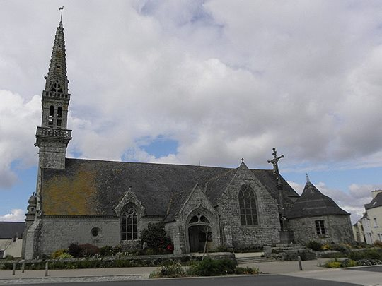

Version "Manuscrit de Keransquer" (KLT)
AN TRI MALEÜRUS
a. Didostait holl tud yaouank, didostait da gleved
Un essampl deus an euzhussañ zo a-nevez arruet
Gant tri den maleüruz-kriz ha holl-direzon
Pehini reas d'an diaouled añtre kreiz o c'halon.
(1) D'ar seizhvet devezh war-nugent demeuz-a viz faver
Ha devezhioù Meurlarjez, evit espliked sklaer,
Zo arruet en ar ger, er ger deuz-a Volant,
Evit reiñ sklaer da entent, dirak ar C'hristenien.
(2) Oa an tri den maleürus 'barzh un ostaliri,
Deus al likeur ar gwellañ oc'h en-em servijiñ.
Pa oa karget o c'horfoù, tre-n'he oa konkluet
D'an holl kemer maskoù vit moned da redek.
(3) An trede euz anezhe a oa maleürussañ
Da wel e gamaraded o vond kuit digantañ,
Eñ sonje vont d'ar garnel. E benn en-doa lakaet,
E benn barzh ur penn-maro, eüzhus voa da weled!
(4) Barzh toulloù e zaoulagad alume flamboezoù
Ha ni m 'he wele redeg 'bep-lec'h dre ar ruoù.
Ar vugale a zeue 'bep-lec'h araok dezhañ;
Nemed an dud rezonapl a tec'he dirazañ.
(5) Gober a reas o tro heb en-em reñkontriñ
E kornad demeus ar ger en-em zegouet o tri.
Hag eno o-doant galvet ar zent ha an aelez
Hag hor salver beniget da rentañ brezel d'ezhe.
(6) Skuiz voa Doue deus o gweled ha skoas un taol pounner,
Ken a roas ur grenadenn d'an holl tier ar ger.
Konvertiñ ra o c'halon an holl habitanted
Ken a grede voa erruet ar fin demeus ar bed.
(7) Distreiñ rae ar maleüruz da zegas d'ar garnel
Ar penn-maro oa gantañ d'ober an tro kêr.
A eñ zeuas eñ pediñ o treiñ e gein dezhañ
Dont d'an nozioù warlerc'h, dont d'e di da koaniañ.
(8) An den-mañ a eas d'ar ger, da gemer e repoz.
A zailhas barzh e gwele ar rest demeus an noz.
An den-mañ a tavaz d'oc'h den, d'oc'h tud e di
N em fie en e hardies hag e efroñteri.
(9) Antronoz vintin pa zavaz an dud da labourad,
Ne soñje ket n'e torfed, e torfed detestapl.
Pa oa an dud da koañiañ, ouzh an daol,
E teuas ar penn-maro da skeiñ war an nor.
(10) An hini en-deus savet, digoret an nor dezhañ
Ha kemend oa estonet a deuas da gouezañ.
Krog eñ a reas daou en e esper vit e sevel,
Kement a oa estonet, kemend voa red mervel.
(11) Di avañs rae an anaon, zeue 'n e roll, tre en ti:
- Chomit, va zud, da goaniañ, me jen den ebet!
Med c'hwi a c'hell, va gomper, va gomper maleüruz,
Me gweled a rez bremañ en ur stad perilhus. -
b. Gantañ voa holl e relegoù, dre galloudezh Doue,
Trema voa d'oc'h en dougen trema oa e buhez.
- E-lec'h pediñ evidon c'hwi greske va enui! -
A-lerc'h a zeu d'en diframmañ. O Doue, Pebezh fin!
c. Setu maro pevar den demeus ar memez ti,
Ha pedomp Doue evite hag ar Werc'hez Vari!
An den-mañ oa oadet a pemp bloaz war-nugent.
Ho pediñ ran, tudoù yaouank, da gleved an esampl.
d. Da bellaat deus an dañjer, deus gwall kompagnunez
Zo kaos da mil valeur, da mil fallagriezh.
Pa glevas e gamaraded pesort punision
A guitas an holl moyen, ha voent maes ar vro,
Evit gober pinijenn ar rest deus o deizioù.
e. Ha c'hwi, tadoù ha mammoù, kement 'peus bugale,
O korijit, instruit, bezit fur, soñjit enne!
Rag mar vañkfec'h war-nez se, abred pe ziwezhat,
Int a roy d'eoc'h-hu amañ pe d'ezo gwall kalonad.
VARIANTE
(1.b) D'an seizhvet devezh war-nugent demeuz ar viz c'hwever
Deus ar bloavezh mil c'hwec'h-kant pevar-ugent ha c'hwec'h
Zo erruet un estlamm e ger a Rosporden
Evit reiñ da gentel, siwazh, Kristenien!
(2.b) Tri den yaouank dirollet oa en un ostaliri
Gant ar podoù gwin oa tañvet oa o gwad da virviñ,
Pa devent debret awalc'h hag ivez holl evet:
- Deomp-ni da ger kroc'hennoù, ma Doue, kroc'hennoù loened
- Deomp-ni bremañ da ziwisk, gwiskomp kroc'henn loened.
(3.2) E benn barzh ur penn-maro ha boutaz ur gouloù.
(4.2) Youdal ha lammed en'em lakaat o tri
(5.4) Lar "'Tro Doue, pelec'h out? Amañ zo ur c'hoari
(7.4) Deus d'am zi-ta, penn maro, deus d'am zi da goaniañ
(9.3) Nag ivez d'an ebat ...diouzh an noz digor
(11.b) Kerzhed reas an anaon, a zeuas en e roll, tre
- Setu emaon degouezhet da goaniañ ganit-te.
Deomp-ni eta, va komper, n'eo ket aes el lec'h-mañ,
Deomp-ni hon-daou ouzh va daol savet e-barzh va bez! -
(12.b) Ne oa ket e gomz gantañ, e gomz peurechuet
Pa yudaz an den yaouank gant ur spont kriz meurbed
Pa yudaz an den yaouank gant ur spont kriz meurbed
Ha kouezhas plomb war e benn, gant 'n anaon diframmet.
Version Lédan
RECIT COMPOSET A-NEVEZ VAR SUJET
EUN EXEMPL ERUET GANT TRI MALEÜRUS
[D] Kement den am selaou hag a zo badezet
Oc'h ober refleksion a vezo estonet.
(1) En eizhvet deizh war-nugent demeuz-a viz gwenver
En devezioù Meurlarjez, evit esplikañ sklaer,
Er bloaz mil eizh kant ugent, er ger euz-a Boull-Lan,
Evit reiñ sklaer da entend, dirak ar C'hristenien.
(2) E voa tri maleürus en un ostaliri,
Eus al likeurioù gwellañ ouzh en-em servijiñ.
Ha pa oe leun o c'horfoù, o deveus konkluet
Etreze kemer maskoù evit moned da redek.
[A] Daou anezhe o-deus lakaet war o c'heinoù krec'hin
Da c'holo o habijoù ha kerniel war o fenn.
(3) An drived euz anezhe eo ar maleürussañ
Pa oa e gamaraded o voned digantañ,
Eñ sonjas mont d'ar garnel hag en-deveus fourret
E benn en ur penn-maro: eüzhus voa da weled!
(4) En toulloù e zaoulagad ec'h alum flamboezoù
Evit moned da redeg partout dre ar ruioù.
Ar vugale a zailhe partout araok dezhañ;
Nemed an dud rezonapl a dec'he dirazañ.
(5) Ober a rejont o zro heb en-em rañkontriñ
War ur c'horn demeus ar ger en-em gavjont o zri.
Hag eno o-deus galvet ar zent ha an aeled
Hag hor Zalver beniget da rentañ brezel d'ezhe.
[B] Dre ar bouez eus al lañgaj o-deveus pronoñset
A-enep hor Mestr divin hag hor Mamm beniget,
(6) A skoas un tarz kurun azioc'h dezhe ker pounner
Ken a ra ur grenadenn d'an holl tiez e ger.
Spouronet eo kalonoù an holl habitanted
O soñjal e voa erru ar fin demeus ar bed.
[C] Panevet m'o-deus klevet an deklarasion,
E voant prest da berisañ en spont hag en eston.
(7) Distreiñ a ra 'r maleüruz da zegas d'ar garnel
Ar penn-maro voa gantañ d'e blas, an den kruel!
Hag e teuas d'eñ bediñ, o treiñ e gein dezhañ
Dont an deiz warlerc'h, d'e di evit koaniañ gantañ.
(8) Ac'hane e teu d'ar ger, da gemered repoz.
Hag ez a en e wele ar rest demeus an noz.
[E] Mez ne halle ket kousked gant an anaon mat
A oa gantañ tourmantet o toned d'e bikat.
[F] Hep bezañ bet disklaeriet da nikun euz e di
E furi, e hardison hag e efroñteri
(9) Ez as gante asamblez d'ar park da labourad
N'hell ket repoziñ pa soñj en e grim detestapl.
D'an noz pa oa azezet gant e dud diouzh an daol,
Ec'h erru ar penn-maro da darc'het war an nor.
b. Hag outañ ar relegoù, dre buisañs Doue,
Pere voa ouzh en dougen entre m'oa en buhez.
(10) An hini a zo savet da digeriñ dezhañ
Ouzh er gweled oc'h añtreiñ a deuas da gouezañ.
Kregiñ ra an dud ennañ en aviz e zevel,
Kement a voa spouronet, m'en-deus renket mervel.
(11) Avañs a ra an Anaon, hag en-deus lavaret:
- Chomit, va zud, da goaniañ, na jenit den ebet!
Ouzhit a ran va c'hombat, va c'homper maleüruz,
Va gweled a rez bremañ en ur stad perilhus. -
Remarque:
Les chiffres et lettres en tête des couplets se réfèrent à la numérotation des strophes équivalentes dans le Barzhaz ou dans le manuscrit de Keransquer. En se reportant à la page "Ened Rosporden" on trouvera des traductions approximatives.
Les passages nouveaux sont les suivants:
[A] Deux d'entre eux ont mis sur leurs dos des peaux
Pour couvrir leurs habits et des cornes sur leurs têtes.
[B] A cause de la gravité des paroles qu'ils avaient prononcées
A l'encontre de notre divin Maître et de notre Sainte Mère...
[C] S'ils n'avaient pas entendu l'explication
Ils étaient près de périr de terreur et d'étonnement.
[D] Tous ceux qui m'écoutent et qui sont baptisés
S'ils méditent ce qui suit seront stupéfaits.
[E] Mais ils ne pouvait dormir à cause du pauvre trépassé.
Il était tourmenté par l'âme qui venait le piquer.
[F] Sans souffler mot à quiconque dans la maison
De sa furie, sa hardiesse et son effronterie...
|
|
Version Francès
AN TRI MALEÜRUS
(1) Er bla mil seiz kant ugent, er ger eus a Boulan
(2) E va tri malevuruz en en ostaleuri
Demeus al liquriw gwelle oc'h enimchervichi.
Pan deuz karget o c'horfou on-deud konklued
Etrezo kemer maskou evit mont da redet
Daw aneu an deus laked war o genou krec'hen
Da c'holoi o abijou a kernel war o fen
(3) An trede demeus anezo zo bet ar malevurusa
Pa velas e zaw gamarad o vont diganta
E sonjas mont dar garnel hag eno n'deus laked
E ben en er pen maro: eujus e da veled!
(4) En toulou euz e zawlagad elumas flameujoù
Evit mont da redet, peb leac'h dre ar ruiw
(5) Ober a rejont o zro eb nimrancontri
En er korn demeus ar ger nimgafchent o zri
...
(6) E skoas en tol gurun ag er skei ken pouner
Krena res ar grenaden tout an ties e ker
Epouvanted e kalon an ol abitanted
O sonjal e va ero ar fin demeus ar bed

Eglise St Cadoan (18. s) de Poullan-sur-Mer
(La sacristie, à droite, est-elle le charnier profané?)
Remark:
The figures and letters prefixed to the verses refer to the tags of equivalent stanzas in the "Barzhaz" or the Keransquer MS. When reporting to page "Ened Rosporden" one will find roughly correct translations.
The new passages translate as follows:
[A] Two of them covered their backs with ox hides
To cover their clothes with horns on their heads.
[B] Due to the gravity of the words they uttered
Against Our divine Master and Our holy Mother...
[C] If they had not heard the explanation
They were near dying of fear and astonishment.
[D] All those who listen to me and are baptized,
If they ponder on it, will be struck with stupor.
[E] But he could not sleep because of the dead man
Whose soul came to torment him by stinging him.
[F] Without saying a word to anyone in the house
Of his fury, his harshness and his effrontery...
|